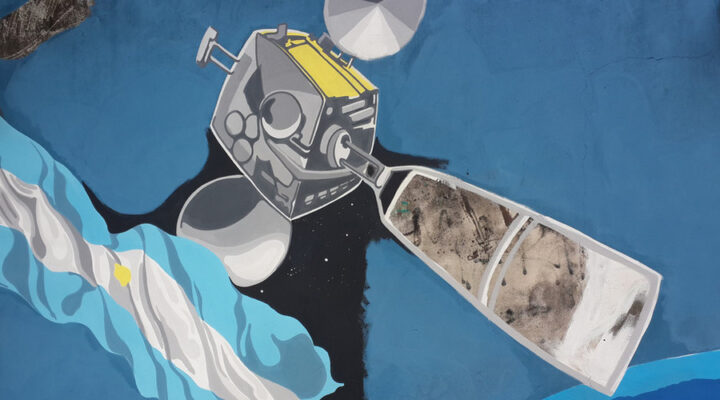

17 de mayo
Día de la Internet
Una fecha para conectar ideas
Cada 17 de mayo se celebra el Día Mundial de las Telecomunicaciones y la Sociedad de la Información, una jornada para reflexionar sobre el papel de las tecnologías digitales y la importancia de que sus beneficios estén al alcance de todas las personas.
Internet también se construye entre todos
La red nos permite aprender, comunicarnos y compartir conocimientos. Usarla de manera responsable implica cuidar nuestros datos, respetar a otras personas y verificar la información antes de difundirla.
- Protegé tus contraseñas y tu información personal.
- Trata con respeto a quienes participan en espacios digitales.
- Consultá fuentes confiables y pensá antes de compartir.